One CRM の使い方
One CRM は、お客様の名前と「会ったこと」を記録するだけで、最後に会った日・回数・売上が自動で出る顧客台帳です。覚えることは3つだけです。まずはここから始めてください。
まずはこの3つだけ
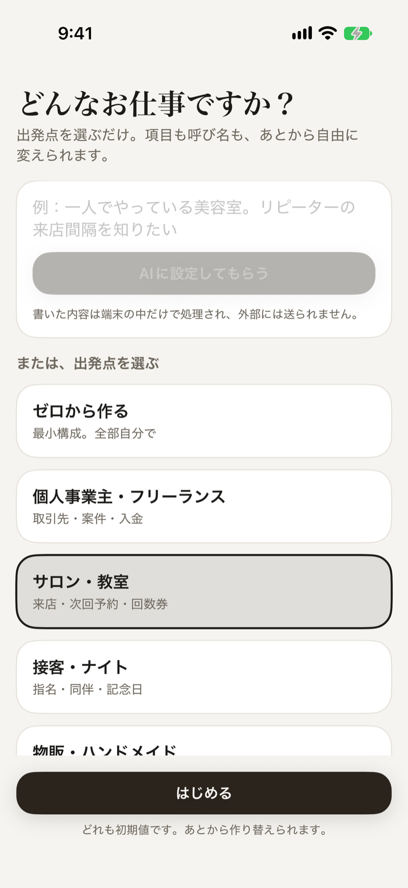
仕事に近い出発点を選ぶ
はじめて開いたら、自分の仕事に近いものを押して「はじめる」。
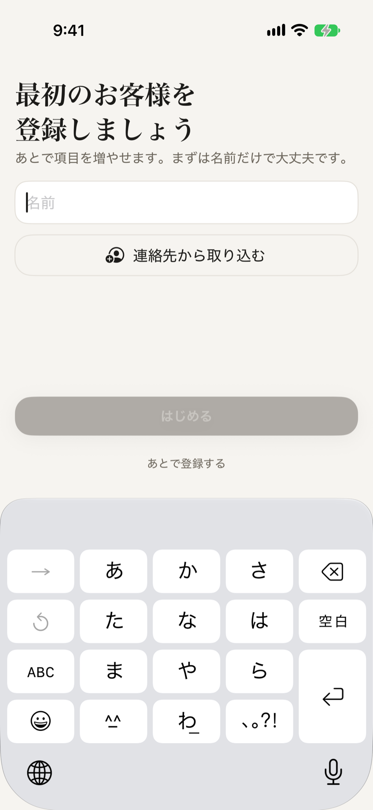
お客様の名前を入れる
名前だけで大丈夫です。連絡先からまとめて入れることもできます。
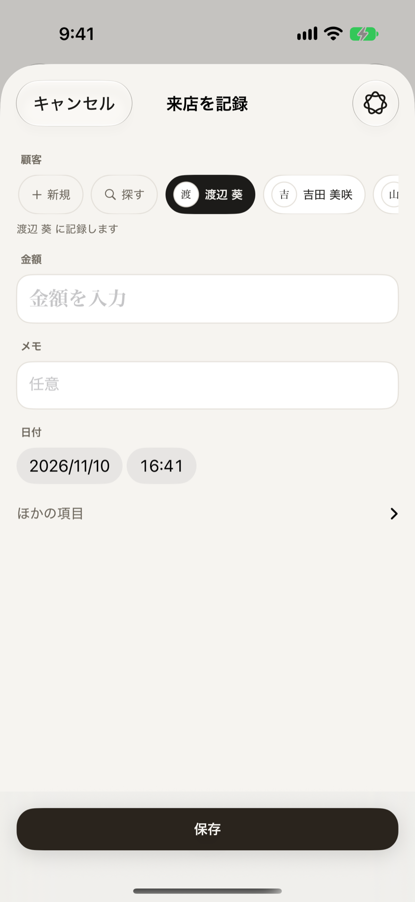
会ったら「＋」で記録する
右下の「＋」→ お客様を選ぶ → 金額を入れて「保存」。間違えたら、すぐ「取り消す」。
これだけで、お客様ごとの「最後に会った日」「回数」「今月の売上」「累計」が自動で出ます。ホームには、しばらく会えていない方が並びます。残りの機能は、必要になったときに下の一覧から探してください。
やりたいことから探す
設定とデータ
通知を受け取りたい Apple Intelligence を使いたい スタッフと一緒に使いたい 機種変更・バックアップ・CSV・ロック 無料でできることと Pro の違い iPad・Mac で使いたい困ったとき
うまくいかないときはじめる前に
- iPhone・iPad（iOS 26 以上）か Mac（macOS 26 以上）で使えます。
- アカウント登録は不要です。入れたデータは、この端末と、iCloud 同期がオン（初期設定）のときはご自身の iCloud に保存されます。開発元の Pohoda には送信されません。
- お客様は10人まで無料です（商売を分けて使う場合は、その合計）。記録・通知・バックアップ・CSV・アプリロックは、無料のまま使えます。
出発点を選んで始める
はじめて開くと「どんなお仕事ですか？」と出ます。「出発点」は、仕事の種類ごとに用意した初期設定です。項目や呼び名が、その仕事向けに最初から入っています。
- 下の表を見て、自分の仕事に近い出発点を押します。
- 「はじめる」を押します（出発点を選ぶと押せるようになります）。
- 「最初のお客様を登録しましょう」と出たら、名前を入れて「はじめる」を押します。「連絡先から取り込む」で、iPhone の連絡先からまとめて入れることもできます。あとで登録するなら「あとで登録する」を押します。
| サロン・教室 | 美容室・ネイル・エステ・整体・教室など。お客様と来店を記録します。メニュー、次回予約、回数券・コースの残り回数を残せて、最終来店・来店回数・今月の売上・累計を自動で計算します。 |
|---|---|
| 個人事業主・フリーランス | デザイン・執筆・開発などの受託。取引先・案件・やりとりを記録します。案件は「問い合わせ」から「入金済」までの進み具合で管理し、最終連絡と累計の売上を自動で計算します。 |
| 接客・ナイト | ラウンジ・バーなどの接客。顧客と来店を記録します。同伴・誕生日・ランクを残せて、最終来店・来店回数・今月売上・累計を自動で計算します。 |
| 物販・ハンドメイド | ネットショップ・ハンドメイド作家。顧客・注文・在庫を記録します。販売経路やお届け先を残せて、最終注文と累計を自動で計算します。 |
| 法人営業 | 会社を相手にした営業。取引先・担当者・案件・活動履歴をつなげて管理し、最終接触と活動回数を自動で計算します。 |
| ゼロから作る | 全部自分で作りたい方向け。顧客・取引・タスク・ノートだけの最小構成です。来店などの記録の種類と自動計算は入っていません。 |
AI に設定してもらう（対応している端末のみ）
Apple Intelligence が使える端末では、同じ画面の上に入力欄が出ます。「一人でやっている美容室。リピーターの来店間隔を知りたい」のように仕事を一言で書いて「AIに設定してもらう」を押すと、出発点・お客様の呼び名・追加する項目の案が出ます。内容を確かめて「この内容ではじめる」を押します。書いた内容は端末の中だけで処理され、外部には送られません。
出発点を選び直したいとき
始めたあとに出発点そのものを選び直すことはできません。別の出発点で使いたいときは、「カスタマイズ」の「ビジネス」で「ビジネスを追加」を押し、名前と出発点を選んで、新しい台帳として作ります（コレクションとビジネス）。
画面の見方
iPhone では、画面の下にタブがアイコンで並びます。表示しているタブは、すべて並びます（多いときは2段になります）。右下の丸い「＋」は、会ったことをすぐに残す「記録」のボタンです。
| ホーム | 家のアイコンです。今日・明日の予定や、しばらく会えていない方など、いま気にかけるものが並びます。 |
|---|---|
| 顧客・来店・案件など | 記録の種類ごとの一覧です。種類ごとにアイコンが違います。どのアイコンがどの種類かは、「カスタマイズ」の「タブ」で確かめられます。 |
| カスタマイズ | いちばん右のアイコンです。商売（ビジネス）の切り替え、記録の種類、タブの並び、同期・通知・ロック・バックアップ、プランの設定です。 |
| ＋（記録） | 会ったことをすぐに残すボタンです。タブの右に、いつも出ています。 |
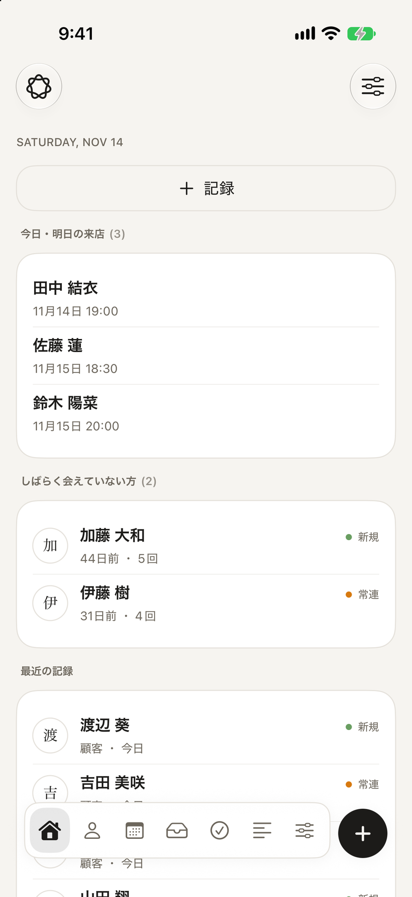
一覧を下へスクロールすると、タブは左下の丸いボタン（いま開いているタブのアイコン）に小さくなります。丸いボタンを押すか、上へ少し戻すと、もとの並びに戻ります。「＋」は小さくならないので、いつでも押せます。
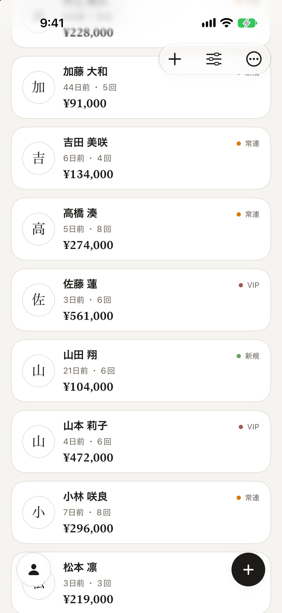
使わないタブは、「カスタマイズ」の「タブ」で目のアイコンを押すと隠せます。上下の矢印で並べ替えもできます。「分析」のタブは最初は隠れているので、使うときは同じ場所で表示します。
このガイドは、アプリの「カスタマイズ」→「サポート」→「使い方」からいつでも開けます。
ことばの意味
| 出発点 | 仕事の種類ごとに用意した初期設定。最初に1つ選びます。 |
|---|---|
| コレクション | 記録の種類のこと。「顧客」「来店」「案件」「タスク」などが、それぞれ1つのコレクションです。 |
| ビジネス | 商売ごとの台帳。商売が2つあるときに分けて使います。1つだけなら気にしなくて大丈夫です。 |
| 自動計算 | 記録から自動で出る項目。「最終来店」「来店回数」「今月売上」など。自分で入力する必要はありません。 |
| 予定 | 先の日付で保存した記録。その日が来るまで、回数や売上には数えません。 |
| 保管する | 削除せずに一覧から隠すこと。もう来ない方に使います。あとで戻せます。 |
お客様を登録する
- 「顧客」のタブ（人のアイコン）で、右上の「＋」を押し、「手で入力」を選びます。
- 名前を入れます。先頭の丸い部分を押すと写真も登録できます。
- ほかに入れたい項目は「項目を追加」から足します。
- 右上の「保存」を押します。
一覧の呼び名は、出発点によって「お客様」「取引先」などになります。
連絡先からまとめて入れる
「顧客」の一覧で、右上の「＋」を押し、「連絡先から取り込む」を選びます。名前・よみ・電話・メール・顔写真が入り、同じ名前の人は取り込みません。
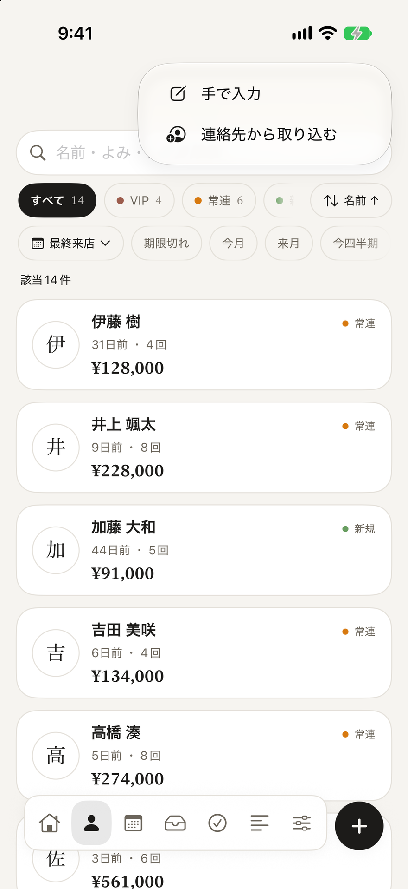
会ったことを記録する
- 画面の右下の「＋」を押します（ホームの「＋ 記録」でも同じです）。
- お客様を選びます。最近やりとりした方が並ぶので、名前を押すだけです。並んでいない方は「探す」、はじめての方は「新規」を押します。
- 金額があれば入れます。前に使った金額がボタンで出るので、同じ金額なら押すだけです。
- 必要なら、メモを書きます。メニューの内容や同伴など、ほかの項目も入れるときは「ほかの項目」を押して開きます。
- 日付と時刻は、いまの時刻が入っています。必要なら変えて「保存」を押します。
「保存」が押せないときは、お客様がまだ選ばれていません（「顧客を選んでください」と出ます）。金額を入力している間は「保存」が隠れるので、キーボードの「完了」を押してから保存します。「探す」で見つからないときは、その名前のまま新しく登録できます。
「来店」などの一覧の右上の「＋」からも、同じ画面が開きます。
保存すると、そのお客様の最後に会った日・回数・今月の売上・累計が自動で更新されます。記録を削除したときも計算し直します。
保存した記録は、ホームの「最近の記録」か、お客様の詳細の「これまでの記録」から開いて、あとから直せます。
次の予約（予定）を入れる
同じ「記録」の画面で、日付を先の日にすると「予定」として保存されます。「毎週」「隔週」「毎月」の繰り返しも選べます。同じ時間帯にほかの予定があると知らせます。予定は、その日が来るまで回数や売上には数えません。
間違えて記録したとき
保存した直後は、画面の下に「記録しました 取り消す」と数秒出ます。「取り消す」を押すと、いまの記録が取り消されます。
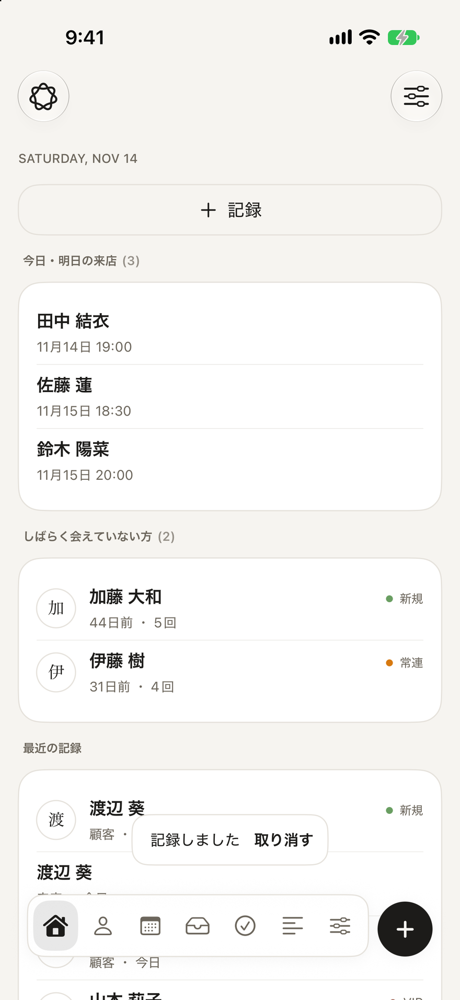
あとから気づいたときは、ホームの「最近の記録」からその記録を開き、左上の「…」から「削除」を押します。金額や日付だけ直すなら、開いて項目を押せば書き換えられます。
お客様の詳細を見る
一覧でお客様を押すと、詳細が開きます。
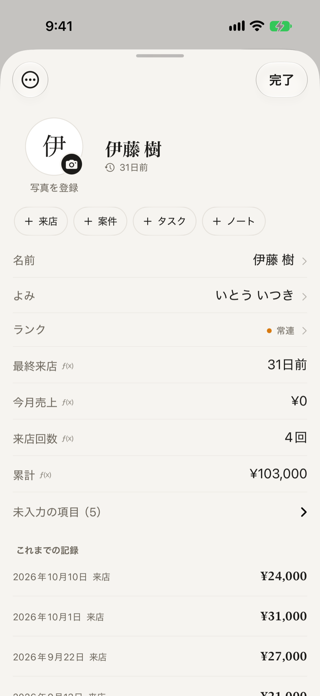
- 直す：項目を押すと、その場で書き換えられます。右上の「完了」を押しても、画面を下に引いて閉じても、保存されます。
- 記録を足す：名前の下の「＋ 来店」を押すと、その方を選んだ状態で記録の画面が開きます。
- これまでの記録：その方の来店や注文が新しい順に並びます。10件を超えると「すべて表示」が出ます。
- 連絡する：電話番号やメールの項目から、電話・SMS・メールを開けます。そのあと「連絡したことを記録しますか？」と聞かれ、「記録する」を押すと今日の日付で1件残ります。
- 入れていない項目：「未入力の項目」を押すと、まだ入れていない項目が開きます。
- 保管・複製・削除：左上の「…」から選びます。削除は元に戻せません。もう来ない方は「保管する」を使うと、あとで戻せます。来店などの記録を「複製」すると、同じお客様・いまの日時で新しい記録ができて、そのまま開きます。
ホームを使う
ホームには、出発点に合わせたものが最初から置いてあります。当てはまる記録があるものだけが表示されるので、記録が少ないうちは空に見えることがあります。いちばん下には、最近の記録が5件並びます。
| しばらく会えていない方 | 最後に会った日から30日以上たった方が出ます。 |
|---|---|
| 今日・明日の予定 | 今日と明日の予定が並びます。 |
| 次回アクション・タスク | 期限が近いもの、過ぎたものが並びます。 |
| 動きが無い案件 | しばらく更新していない案件が並びます。受注・失注など、終わった案件は出ません。 |
| 在庫わずか（物販） | 残りが少ない在庫が並びます。 |
ホームに置くものを変える
ホーム右上のスライダーのアイコンを押すと「ホームを編集」が開きます。
- 足す：「追加できるもの」の「＋」を押します。候補は、自分の項目名から自動で作られます。無料では、最初から置いてあるものに加えて2つまで足せます。
- 日数や件数を変える：「何日ぶりから出すか：30日」のような文字を押して選びます（14日・21日・30日・60日）。
- 並べ替える・外す：ドラッグで並べ替え、左にスワイプして外します。
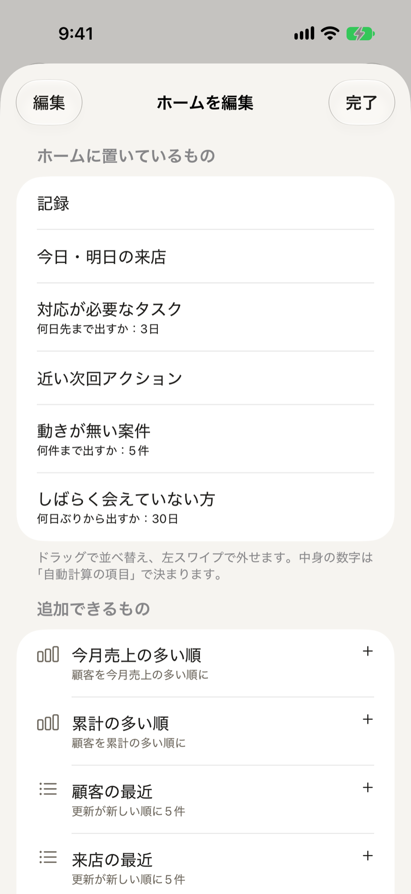
一覧で探す・整理する
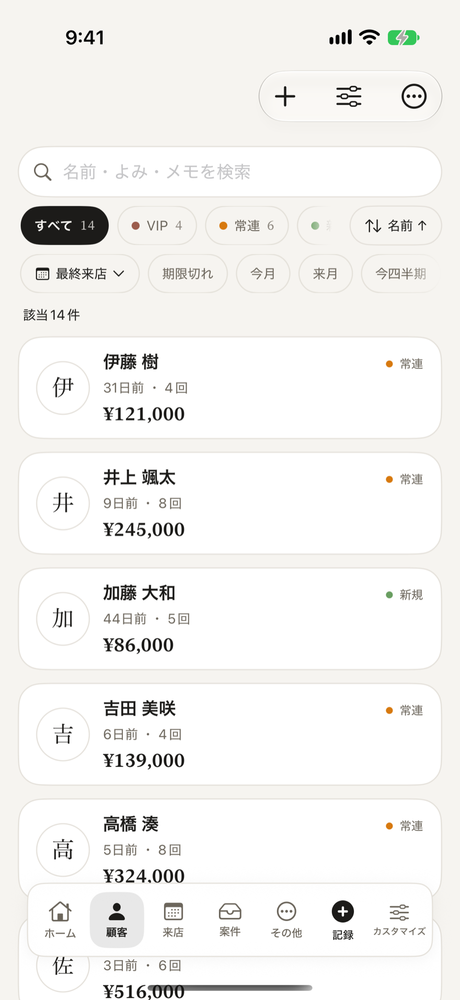
- 探す：上の検索欄に、名前・よみ・メモの一部を入れます。ひらがなとカタカナ、全角と半角の違いは気にしなくて大丈夫です。電話番号は、ハイフンがあってもなくても探せます。漢字の名前をひらがなで探すには、「よみ」を入れておきます。
- 絞り込む：「VIP」「常連」のようなボタンを押します。件数も出ます。
- 並べ替える：「↑↓ 名前」のボタンを押して、並び順を選びます。同じ並び順をもう一度選ぶと、逆順になります（矢印の向きが変わります）。五十音順にしたいときは「よみ」を選びます。
- しばらく来ていない順に並べる：並び順で「最終来店」を選び、もう一度「最終来店」を選んで矢印を「↑」にします。いちばん長く来ていない方が上に来ます。
- まとめて操作する：右上の「…」から「まとめて操作」を選びます。選んだ方に、まとめてタグを付ける・ランクなどの選択項目を変える・保管する、ができます。
- 保管した方を見る：右上の「…」から「保管したものを見る」を選びます。
- 1件ずつ操作する：行を長押しすると、「保管する」「複製」「削除」が出ます。
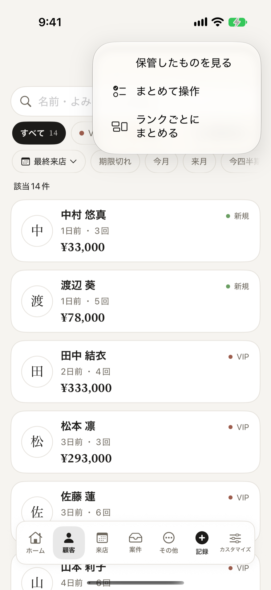
項目を作り替える
項目の編集は、各一覧の右上にあるスライダーのアイコンから開きます。「呼び名とアイコン」「項目」「カードの見せ方」の3つがあります。
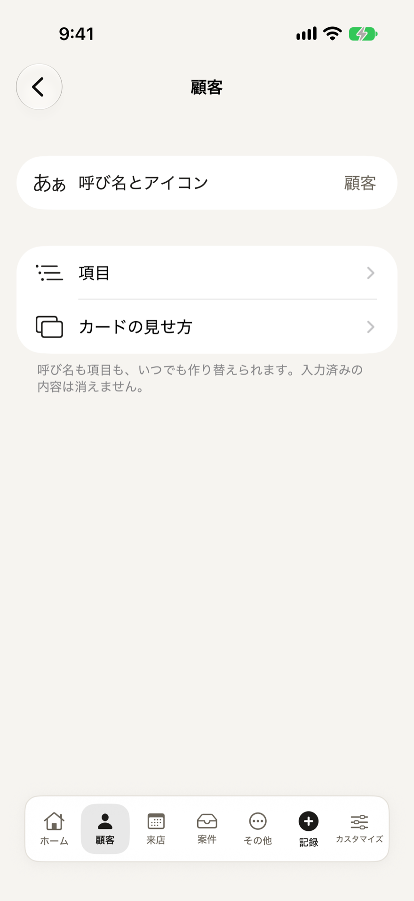
項目を足す
- 「項目」を開き、「項目を追加」を押します。
- 名前（例：好きな飲み物）を入れ、種類を選んで「追加」を押します。
| テキスト | 名前や短い文章。電話番号・メール・リンク・住所として扱うと、そこから電話やメールを開けます。 |
|---|---|
| メモ | 長い文章 |
| 数値 | 件数や回数。単位と小数の桁を決められます。 |
| 金額 | 金額。税率と税込・税抜の入力を決められます。 |
| 日付 | 経過日数や記念日に使えます。 |
| 選択 | 決まった選択肢から1つ。色を付けられます。 |
| タグ | 決まった選択肢からいくつでも |
| 評価 | ★5段階 |
| 画像 | 写真を1枚 |
| ON/OFF | はい・いいえ |
| 関連 | ほかの記録とつなぎます（例：案件と取引先）。 |
項目ごとの2つのスイッチ
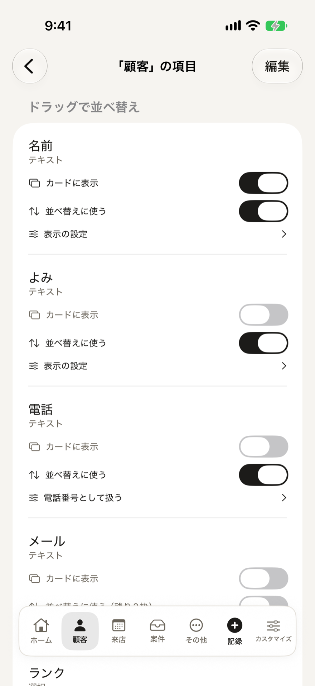
| 詳細に最初から出す | オンにすると、詳細の画面と新しく登録する画面に、その項目が最初から並びます。オフの項目は、入力するまで「未入力の項目」にまとまります。一覧に出す内容は、ここではなく「カードの見せ方」で決めます。 |
|---|---|
| 並べ替え・集計に使う | オンにすると、一覧の並べ替えや絞り込みに使えます。金額の項目は、オンにしておくと分析やホームの集計にも使われます。使える数には限りがあり、残りの数が表示されます。 |
選択肢を直す・項目を隠す
選択やタグの選択肢は、項目の「選択肢を編集」で名前・色・並び順を変えたり、追加・削除したりできます。入力中に選択肢を選ぶ画面からも開けます。
使わない項目は、左にスワイプして「非表示」にできます。非表示にしても、入力済みの内容は消えません。同じ画面のいちばん下の「非表示の項目」から戻せます。
一覧に出す内容を変える（カードの見せ方）
「カードの見せ方」では、一覧の1件ごとのカードに、どの項目を出すかを決めます。タイトル・バッジ・補足・数値の枠ごとに項目を選びます。
呼び名を変える
「呼び名とアイコン」で、「顧客」を「お客様」「生徒」などに変えられます。呼び名を変えても、入力済みの内容も自動計算も変わりません。
自動計算の項目を作る
「最終来店」や「今月売上」のような自動計算の項目は、顧客や案件の「項目」画面にある「自動計算の項目を追加」で作れます。出発点に最初から入っているものは、そのまま使えます。
- 「呼び名」を入れます（例：最終来店・来店回数・今月売上）。
- 「何から数えるか」で、来店や注文などの記録の種類を選びます。
- 「数え方」を選びます。「最後の日付」はいちばん新しい記録の日付、「件数」は記録の数、「合計」は金額などの足し算です。合計のときは「何を足すか」も選びます。
- 件数と合計は、「期間」を「全期間」か「今月」から選びます。今月は、月が替わると0から数え直します。
作るとすぐに計算されます。数えるもとの記録に、その顧客につなぐ「関連」の項目があることが必要です。
コレクションとビジネス
コレクション（記録の種類）を足す
顧客・来店・注文・在庫のように、記録したいものの種類を「コレクション」と呼びます。「カスタマイズ」の「コレクション」で「コレクションを追加」を押し、呼び名・アイコン・種類を選んで作ります。作ったコレクションは、自動でタブに並びます。タブのアイコンは種類から自動で決まり、同じ種類のコレクションを増やしても別のアイコンになります。
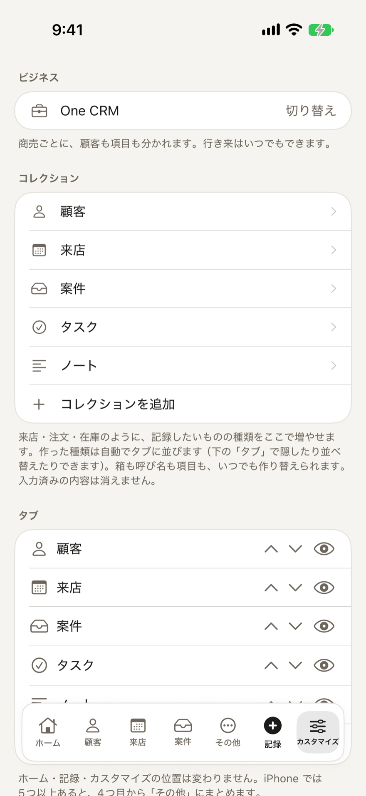
| 相手 | 顧客・取引先など。最後に連絡した日や合計を自動で計算できます。 |
|---|---|
| 出来事 | 来店・注文・セッションなど。相手につなげて記録します。 |
| 取引 | 案件・契約など。進み具合を段階で管理します。 |
| やること | 期限のあるもの |
| ノート | 文章を残すだけのもの |
| その他 | 在庫・商品・場所など |
種類は作るときにだけ選べます。無料では、出発点で用意されたものに加えて1つまで作れます。
「カスタマイズ」の「コレクション」に並ぶ名前を押すと、その一覧が開きます。項目を変えるときは、開いた一覧の右上のスライダーのアイコンを押します（項目を作り替える）。
ビジネス（商売ごとの台帳）を足す
商売が複数あるときは、「ビジネス」を分けて使えます。ビジネスごとに顧客も項目もホームも分かれます。「カスタマイズ」の「ビジネス」で「ビジネスを追加」を押し、名前と出発点を選びます。ビジネスが2つ以上になると、ホームの右上にビジネスの切り替えボタンが出ます。
法人営業で使う
「法人営業」の出発点では、取引先・担当者・案件・活動履歴をつなげて管理します。
- 「取引先」のタブで会社を登録します。
- 「担当者」のタブの「＋」で担当者を登録し、「取引先」で会社を選びます。1社に何人でもつなげられます。
- 「案件」のタブで案件を登録し、取引先と担当者を選びます。
- 商談や訪問をしたら、右下の「＋」から活動履歴を残します。最終接触と活動回数が自動で更新されます。
案件の一覧は、ステータス（案件化・見積提示・確度50%・コミット・受注・失注）ごとにまとまり、段階ごとの件数と金額の小計が出ます。上のボタンで段階ごとに絞り込めます。段階を進めるときは、案件を開いて「ステータス」を選び直します。
段階の名前や数は、「ステータス」の「選択肢を編集」で自分のやり方に合わせて作り替えられます。「終了した案件として扱う」をオンにした段階の案件は、ホームの「動きが無い案件」や通知から外れます。
通知を受け取る
「カスタマイズ」の「通知」で「お知らせを受け取る」をオンにします。先の日付の予定やタスクを初めて保存したときにも、通知を許可するか聞かれます。ビジネスごとに、通知のオン・オフも選べます。
| 予定 | 前日の18時と当日の8時 |
|---|---|
| 記念日（誕生日など） | 3日前の9時 |
| タスク・次回アクションの期限 | 当日の9時 |
| しばらく会えていない方 | 最後に会った日から30日以上たった方がいる日の9時（日数は、ホームの「しばらく会えていない方」で選んだ日数に合わせます） |
通知を押すと、その方や予定の画面が開きます。通知は端末の中だけで組み立てています。届かないときは、iPhone の設定アプリで One CRM の通知が許可されているかを確かめてください。
Apple Intelligence で話しかける
Apple Intelligence に対応した端末で、設定の Apple Intelligence がオンのときに使えます。ホームの左上か、記録の画面の右上にある花のような形のボタンを押し、話しかけるように入力します。処理はすべて端末の中で行われます。
| 探す | 「先月来た製造業の顧客」「100万円以上の案件」のように書くと、当てはまる記録の一覧が出ます。 |
|---|---|
| 記録の下書き | 「田中さんと商談、来月見積」のように書くと、項目が埋まった登録画面が開きます。内容を確かめて「保存」を押します。 |
| 数字を聞く | 「今週やることをまとめて」のように聞くと、今月や先月の件数・金額、期限の近いタスク、しばらく連絡していない人数などから答えます。 |
使えない端末でも、手で入れればすべての機能を使えます。
チームで使う（Pro）
ビジネスをほかの人と共有して、同じ顧客台帳を一緒に使えます。日本の App Store で Pro を登録していて、iCloud 同期がオンのときに使えます。共有に参加する人も、それぞれ Pro の登録が必要です。
- 共有したいビジネスを選んだ状態で、「カスタマイズ」の「ビジネス」にある「チームで使う」を開きます。
- 「メンバーを招待する」を押し、招待を送ります。招待した人だけが参加でき、読み書きができます。
- 招待された人は、届いたリンクを開くと参加できます。参加すると、そのビジネスに自動で切り替わります。
オーナーは「チームで使う」の画面で、参加者を「外す」ことや「共有をやめる」ことができます。参加した人は、「カスタマイズ」の「チーム」にある「チームから抜ける」で抜けられます。抜けると、その端末からビジネスが消えます。オーナーのデータは残ります。
同期・ロック・バックアップ・CSV
iCloud 同期（機種変更もこれで）
「カスタマイズ」の「iCloud 同期」にある「iCloud で同期する」は、最初からオンです。同じ Apple アカウントの iPhone・iPad・Mac で同じ内容になります。新しい iPhone でも、同じ Apple アカウントでアプリを開けば、そのまま読み込まれます。オフにすると、この端末のデータはそのまま残り、ほかの端末とは同じ内容でなくなります。タブの並びと表示は端末ごとの設定で、同期しません。
アプリロック
「カスタマイズ」の「プライバシー」で、「Face ID でロック」（端末によって Touch ID・パスコード）をオンにします。アプリを切り替えたときの画面も隠れます。端末にパスコードが設定されていないと、オンにできません。
バックアップ
「カスタマイズ」の「データ」にある「バックアップ・CSV」を開きます。「バックアップを書き出す」で、写真も含めたデータを1つのファイルに保存できます。念のための控えに使えます。書き出しはずっと無料です。
「バックアップから復元」では、「いまのデータに足す」か「いまのデータを置き換える」を選べます。復元の前に、いまのデータは自動で控えられます。
CSV
同じ画面の「CSV」で、コレクションごとに「書き出す」「取り込む」ができます。1行目が項目名になり、Excel で開けます。
- Excel で保存した CSV を、そのまま取り込めます（UTF-8 と Shift_JIS のどちらでも読めます）。
- 1行目の項目名と同じ名前の項目に、自動で割り当てます。
- 金額は「1000」「1,000」「¥1,000」「1000円」のどれでも読めます。日付は「2026/1/5」「2026-01-05」「2026年1月5日」が読めます。読み取れなかった値があると、取り込みの結果に数が出ます。
- 取り込むときは、「取り込む（同じ名前は飛ばす）」「同じ名前は上書きする」「対応する列だけ・そのまま足す」から選べます。対応する項目がない列は、前の2つを選ぶと新しい項目として作られます。
- 来店や注文の CSV に「顧客」の列があると、名前が一致するお客様につながり、最終来店や回数などの自動計算に入ります。先に顧客を取り込んでから、来店を取り込んでください。同じ名前のお客様が2人以上いる行や、一致する方がいない行はつながらず、結果に行数が出ます。
無料でできることと Pro
| 無料 | Pro | |
|---|---|---|
| 顧客の登録 | 10人まで（全ビジネスの合計。保管した人は数えません） | 無制限 |
| コレクションの追加 | ビジネスごとに1つ | 無制限 |
| 項目の追加 | コレクションごとに3つ | 無制限 |
| 自動計算の追加 | コレクションごとに1つ | 無制限 |
| ホームへの追加 | 2つ | 無制限 |
| 顧客ごとの分析 | —（全体の分析は使えます） | ○ |
| チームで使う | — | ○（日本の App Store） |
| 記録・通知・バックアップ・CSV・ロック・Apple Intelligence・iCloud 同期 | ○ | ○ |
出発点で用意された項目やコレクションは、無料の数に入りません。Pro は「カスタマイズ」の「プラン」から、月額1,000円・年額10,000円・買い切り19,800円で登録できます。機種を変えたときは、同じ画面の「購入を復元」を押してください。
iPad・Mac で使うとき
iPad（通常の幅）と Mac では、左から「サイドバー・一覧・詳細」の3列で表示されます。一覧の行を選ぶと右の列に詳細が出て、離れるときに自動で保存されます。
| ⌘N | 記録 |
|---|---|
| ⌘F | 一覧の検索 |
| ↑ ↓ | 一覧で前後の記録へ移る |
| ⌘⌫ | 開いている記録を削除（確認が出ます） |
| ⌘1〜⌘9 | タブの切り替え |
Mac では、画面のスリープや、アプリを隠したときにもロックがかかります（ロックがオンのとき）。
うまくいかないとき
「＋」（記録）を押すと、顧客の登録が開きます
「ゼロから作る」で始めると、来店などの記録の種類が入っていないため、こうなります。「カスタマイズ」の「ビジネス」で「ビジネスを追加」を押し、「サロン・教室」などの出発点を選んで作り直すのが早道です。いまの台帳のまま使うなら、「出来事」のコレクションと自動計算の項目を自分で作ります。
しばらく来ていない方を探したい
ホームの「しばらく会えていない方」に出ます。全員を順に見たいときは、顧客の一覧で並び順の「最終来店」を選び、もう一度「最終来店」を選んで矢印を「↑」にすると、長く来ていない方から並びます。
一覧に出す内容を変えたい
一覧の右上のスライダーのアイコンから「カードの見せ方」を開いて、出す項目を選びます。「項目」にある「詳細に最初から出す」は、詳細の画面と新しく登録する画面の設定です。
書き換えるのをやめたい
詳細の画面は、閉じると保存されます。書き換える前の内容に戻したいときは、もう一度その項目を押して直してください。
下のタブが小さくなりました
一覧を下へスクロールすると、タブは左下の丸いボタンに小さくなります。丸いボタンを押すか、上へ少し戻すと、もとの並びに戻ります。
どのアイコンがどのタブか分かりません
「カスタマイズ」の「タブ」に、アイコンと名前が並んでいます。使わないタブは、同じ場所で目のアイコンを押すと隠せます。
「分析」のタブが見当たりません
「分析」のタブは、最初は隠れています。「カスタマイズ」の「タブ」で、「分析」の目のアイコンを押すと表示されます。
11人目からの顧客が開けません
無料で使えるのは、全ビジネス合計で10人までです。登録の古い順に10人が開けて、それより後の顧客は鍵の印が付きます。顧客を「保管する」か削除すると枠が空きます。Pro にすると上限がなくなります。
最後に会った日や回数が変わりません
自動計算は、顧客につながった来店や注文などの記録から数えます。先の日付の記録（予定）は、その日が来るまで数えません。顧客につながっていない記録（CSV で名前が一致しなかった行など）は数えないので、記録を開いて、顧客の項目でお客様を選んでください。
ホームに何も出ません
ホームに置いたものは、当てはまる記録があるときだけ表示されます。たとえば「しばらく会えていない方」は、最後に会った日から30日以上たった方がいるときに出ます。記録が増えると並ぶようになります。
連絡先から取り込むボタンが見つかりません
「顧客」の一覧で、右上の「＋」を押すと「連絡先から取り込む」があります。
CSV が「ファイルを読み取れませんでした」と出ます
読めるのは、UTF-8 か Shift_JIS の CSV です。Excel のブック（.xlsx）のままでは読めないので、Excel で「CSV（コンマ区切り）」として保存し直してください。
アプリの画面がこのガイドと違います
このガイドはバージョン 1.5 の画面で説明しています。App Store で One CRM を最新版に更新してください。バージョンは「カスタマイズ」のいちばん下の「アプリ情報」で確かめられます。
ほかの端末に同じ内容が出ません
「カスタマイズ」の「iCloud 同期」がオンになっているか、両方の端末で同じ Apple アカウントの iCloud にサインインしているかを確かめてください。「iCloud のアカウントが変わったか…同期を止めています」と出ているときは、「いまの iCloud で同期を再開する」を押します。
通知が届きません
「カスタマイズ」の「通知」で「お知らせを受け取る」と「このビジネスのお知らせ」がオンになっているか、iPhone の設定アプリで One CRM の通知が許可されているかを確かめてください。
「データを開けませんでした」と出ます
記録が消えたわけではありません。「もう一度開く」を押すか、アプリを開き直してください。念のため、「控えを書き出す」でデータを保存しておくと安心です。
解決しないときは、サポート か pohoda.inc@gmail.com までお知らせください。
料金やプライバシーについては One CRM の紹介ページ をご覧ください。